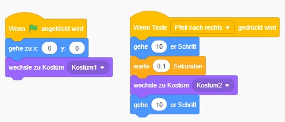

Wie lässt man Scratch animiert gehen - Variante 2
Das funktioniert nur einmal 😕
Lösung: wir setzen am Anfang alles auf Startwerte, damit es immer gleich aussieht.
- Warte bis die Fahne gedrückt wird
- Stelle Scratch in die Mitte (0, 0)
- Ziehe Kostüm 1 an
